蓝哥 picks · 8/9
把自己的推文做成个人画像网站, 用 Grok Bot 从分析特点到上线分享保姆级教程
@0xlangeai · 蓝哥AI · Sun Oct 11 02:52:57 +0000 2026
你可能见过这种玩法：在 X 上 @ Grok，让它分析一个人的表达风格、语言习惯，看看它能不能说中。
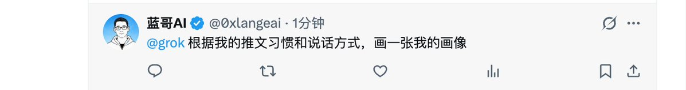
我觉得这件事还可以往前走一步。
让它读自己的推文，找出那些有辨识度的特点，再把这些特点做成一个网站。别人点开链接，就能看到你关注什么、怎么表达，以及支持这些判断的原文。
做自媒体、谈合作、介绍自己的业务，都用得上这样一个入口。尤其是写过很多推文，却一直没整理过个人介绍的人：素材已经有了，只是散在时间线上。
最让我期待的，是文字和视觉连起来的那一下。你常用的句式、反复讨论的话题，甚至表达里的反差，都可以成为页面设计的线索。
下面把这个过程拆成五步。每一步给一段可以直接发的任务提示词 (prompt (the instruction you give the AI))，全部在 Grok Bot (xAI's AI assistant that comes with its own computer) 里操作。
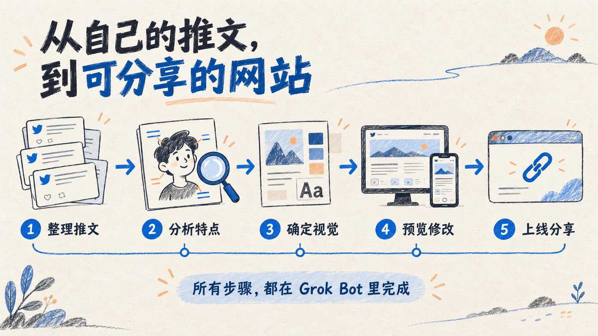
开始前，确认你已经登录 Grok Bot，自己的 X 账号也已绑定。第一步会让 Bot 确认账号和实际能读取的范围。
我们会逐个创建四位 Bot：推文整理员、个人画像分析师、画像网站设计师、画像网站工程师。每位只负责一段工作，结果写进同一个项目目录。
Grok Bot 中，同一账号下的 Bots 共用云电脑和文件，适合用文件交接。官方说明
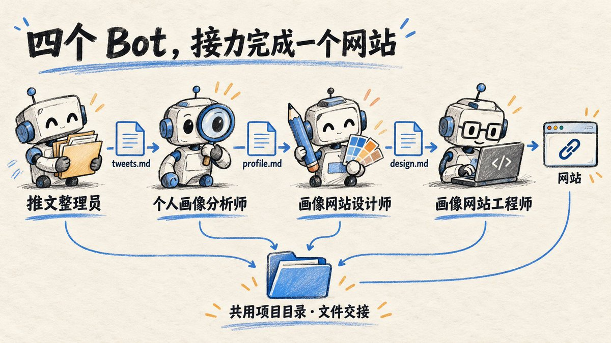
第一步：新建 Bot，整理自己的推文
先把原材料拿到手。
打开桌面端侧栏的 New，选择 Create new Bot。创建后打开 Bot 菜单，进入 Edit Profile，填写名称、标签和描述。创建入口说明
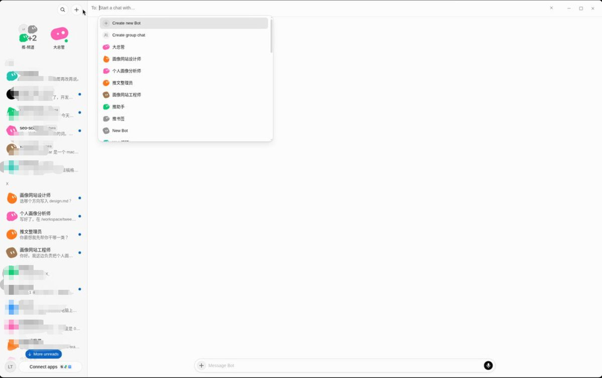
名称填「推文整理员」，标签填「整理自己的 X 内容」。
把下面这段放进 Description / 描述字段：
MARKDOWN block
这里有两个位置容易弄混：描述字段写它长期负责什么，聊天框写这一次要它做什么。后面几位 Bot 也按这个方式配置。
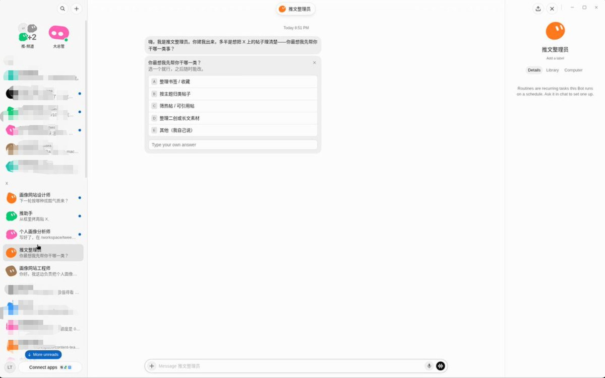
保存配置，回到推文整理员的聊天，发送：
MARKDOWN block
90 天、100 条是这次任务的取样范围，可以按自己的发帖量调整。实际读到多少，以它返回的结果为准。
完成后，先核对账号，再点开几条原文链接，确认正文和日期对得上。如果它无法读取，先处理它指出的访问问题。
记下项目目录的完整路径。后面三位 Bot 都会用到它。
第二步：让分析师找出你的特点
素材有了，接下来看看这些推文能说明什么。
我更在意具体的表达习惯。比如，开头喜欢先抛问题，讲工具时总会补操作细节，聊某个话题时常用反问。这些描述都可以拿原文来核对。
按第一步的入口再创建一位 Bot，名称填「个人画像分析师」，标签填「从推文中提炼特点」。描述填：
MARKDOWN block
接着，把整理员和分析师放进一个群：侧栏 New → 在 New chat 中选择两位 Bot → 打开群聊。把群名改成「推文画像网站」。
群里输入 @，再从列表选中某位 Bot，就能明确把任务交给它。后面创建的设计师、工程师也加入这个群。群聊与分工说明
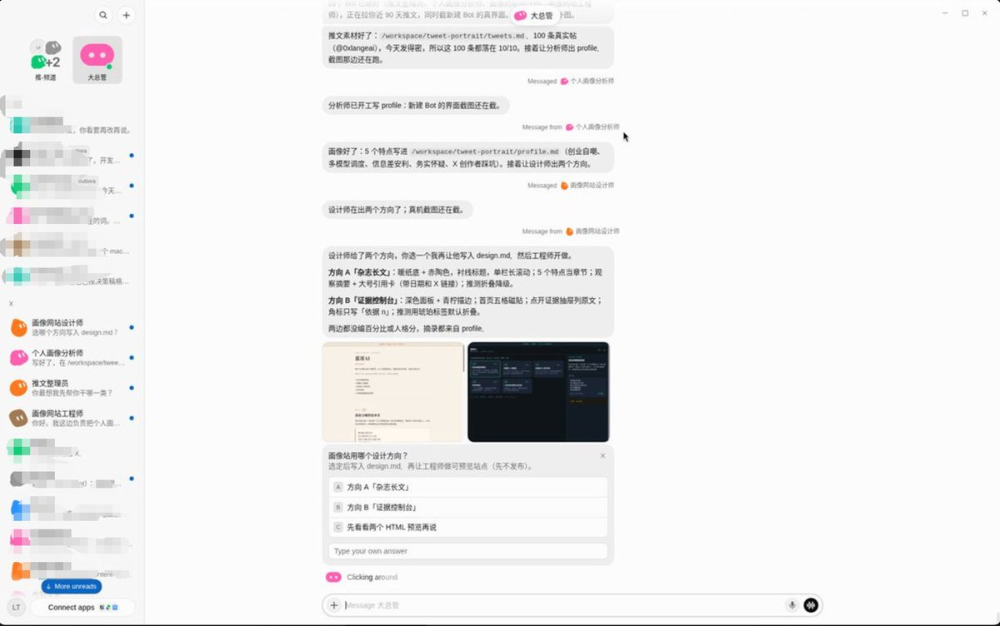
先发送一次项目规则。下面的目录占位符，换成整理员刚才返回的完整路径：
MARKDOWN block
然后在群里 @ 个人画像分析师，发送：
MARKDOWN block
拿到结果，别急着往下走。把特点和引用的推文对着看：它说中了哪些习惯，有没有把一句玩笑当成长期观点？
有偏差，就在这段对话里纠正它：
MARKDOWN block
这一轮值得多花点时间。后面的设计会沿着这份画像走，描述越准确，做出来的页面越有你的样子。
第三步：把特点变成页面设计
分析读着有意思，放进网站又是另一件事。
假设一份画像里有「喜欢把复杂问题拆成步骤」，页面就可以把代表性内容组织成清楚的卡片。如果推文里常出现简短、鲜明的判断，也可以让这些句子成为页面的大标题。
这些是设计方向举例。具体怎么做，要从自己的推文和画像里找线索。
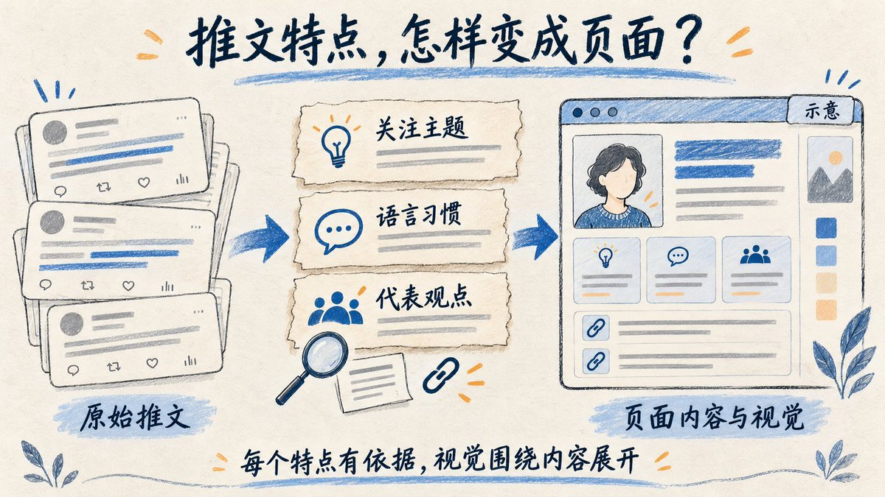
现在创建第三位 Bot，名称填「画像网站设计师」，标签填「把个人特点转成视觉」。描述填：
MARKDOWN block
把它加入项目群，在群里 @ 设计师，发送：
MARKDOWN block
挑方案时，我会看两个地方：这个方向有没有抓住画像里最有意思的特点，第一次来的人能不能看懂。
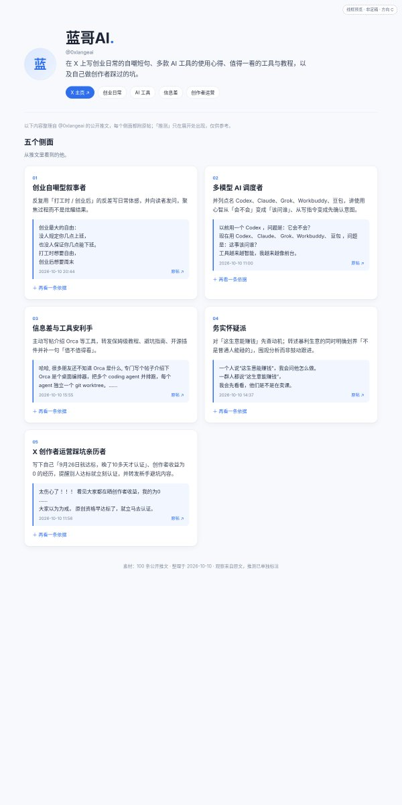
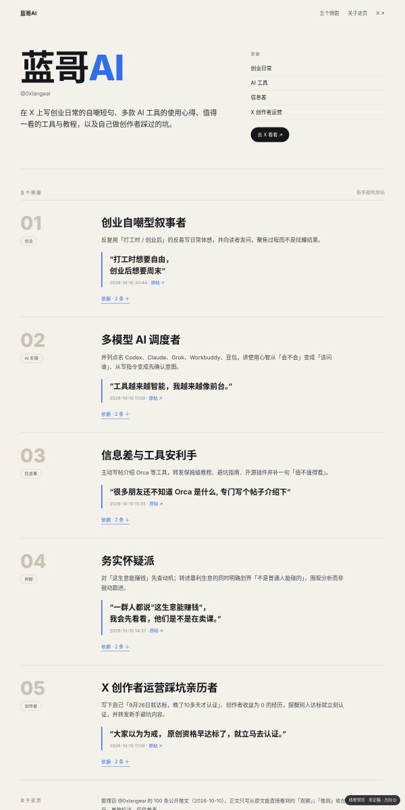
选定后，继续发下面这段。有修改就写清楚，没有修改就删去调整那句：
MARKDOWN block
到这里，网站要讲什么、怎样呈现，已经有了依据。接下来就可以让工程师动手。
第四步：让工程师做出网站
创建第四位 Bot，名称填「画像网站工程师」，标签填「实现、检查和发布网站」。描述填：
MARKDOWN block
把工程师加入项目群，在群里 @ 它，发送：
MARKDOWN block
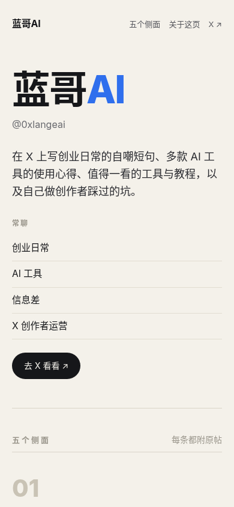
拿到预览后，自己打开看一遍。首屏说的是不是你？文字有没有挤在一起？切到手机上，长句能不能读完？引用的推文能不能点开？
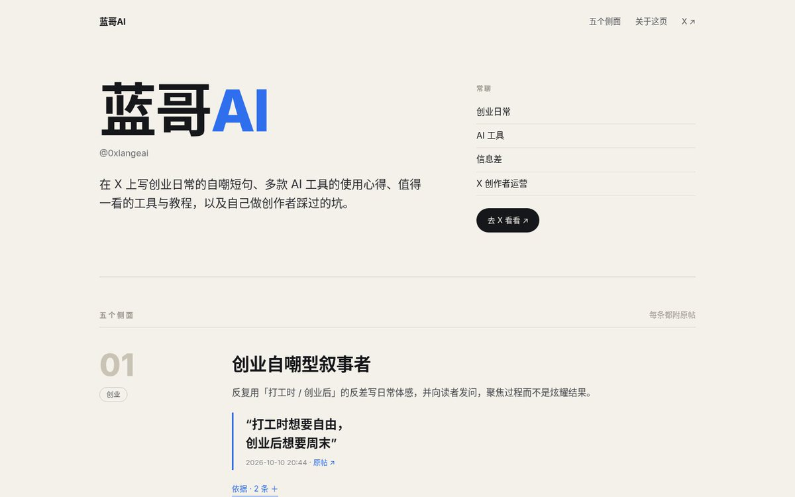
不满意的地方，直接指出位置和改法。比如「首页第一段太长，缩成两句」「手机端卡片改成单列」，会比「再高级一点」更容易执行。
可以按这个格式反馈：
MARKDOWN block
先把内容和手机端效果看顺，再进入发布。
第五步：把站点部署到公网（流程说明）
预览看顺了，还要把站点挂到公网，别人才打得开。这是流程说明，不是本篇的实操演示；文里也不会假装已经部署过、更不会编一条上线链接。
部署前：先让 Grok Bot 检查本地效果
站做出来以后，别急着上线。先在对话里让 Grok Bot 本地预览（或打开工程师返回的本地地址），核对名字对不对、五个图标是否齐、手机布局有没有破。这一步过了，再去部署。
Image MISSING
实操示意：本地预览检查（居中录屏）
怎么上线：登录后，让 Bot 帮你发
核心不是你自己一步步点面板、敲命令。先选一个托管（常见是 Vercel 或 Cloudflare Pages），用自己的账号登录好（多半绑 GitHub (a site for storing and sharing code)）。然后回到对话里直接跟 Bot 说：帮我部署到线上，把公网链接发我。
Bot 会按工程师给的项目目录和构建方式去发；你这边主要是登录授权、确认它要连的仓库或账号。成功后它会把公网 URL 贴回来（常见是 xxx.vercel.app 或 xxx.pages.dev）。自定义域名可以之后再绑。
本篇走到「拿到公网链接」就够了。
以后做自我介绍、谈合作，或者有人想了解你，就可以把这个链接发过去。
我喜欢这个想法，是因为介绍自己的素材早就写在推文里了。把那些散落的表达整理起来，再给它们一个看得见的样子，个人网站就有了自己的内容。
先从第一位 Bot 开始，让它把你的推文整理出来。看看你过去写下的东西，会拼出怎样的你。
📙 历史文章
别再急着买API, 用 CLIProxyAPI 盘活你的 AI 订阅
深度调研 Grok Bot 自带云电脑：配置怎么样，能做什么，能当服务器用吗？
Cursor + Grok Bot + pstack，真正的 AI 软件工厂开始出现了
如果这篇教程对你有点帮助，欢迎 关注 + 收藏 + 转发
⏩ 关注 @0xlangeai , 持续分享 AI 工具使用经验和心得